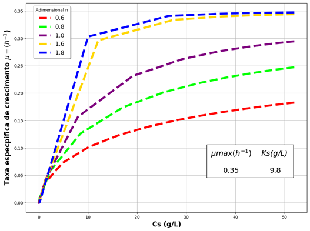
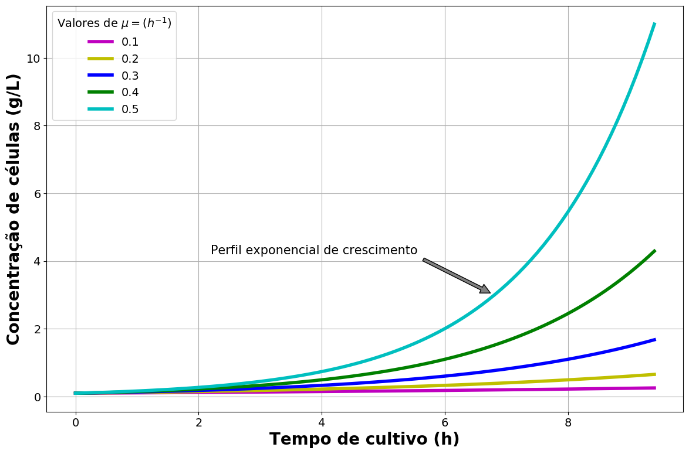

5.1. AUSÊNCIA DE INIBIÇÃO
5.1.1. Contois (1959)
O modelo cinético de Contois (1959) evidencia a dependência da velocidade do crescimento
celular com a taxa específica de crescimento (µ). Trata-se de uma equação matemática
simples, uma vez que apresenta apenas duas variáveis, e que mostrou ser eficiente e
confiável quando empregada para o ajuste de diferentes conjuntos de dados experimentais
coletados durante a realização de ensaios ligados a processos que envolvem a degradação de
matéria orgânica biodegradável.
A principal característica desse modelo preditivo de primeira ordem (adequado para a
descrição de reações hidrolíticas) está centrada no fato de que o mesmo induz à interpretação
de que a velocidade de crescimento celular é quantitativamente dependente das concentrações do
substrato fornecido às biofábricas, bem como à concentração celular segundo a qual as mesmas
se encontram. Em adição, a consideração crucial de que todos os bioprocessos que ocorrem com
a bioconversão de um dado substrato são limitados frente à área superficial disponível para
acesso às moléculas nutrientes pelo microrganismo, e, portanto, pela transferência de massa, a
taxa específica de crescimento descrita matematicamente por Contois pode ser analisada frente a
uma nova perspectiva quantitativa.
Diante desse cenário, sempre que houver um aumento na concentração de células no meio
reacional, este será acompanhado por uma redução crescente de acesso ao substrato pelas mesmas.
Dessa maneira, à medida que o fermentador passa a armazenar uma concentração muito alta de
biomassa, uma característica intrínseca a operações em batelada, o crescimento celular passa
a ficar cada vez mais lento.
Estudos publicados pela literatura científica indicam que a adoção do modelo cinético não
estruturado proposto por Contois é a melhor estratégia para a descrição de eventos
bioquímicos nos quais a transferência de massa, representada pela chegada do substrato ao
interior da célula microbiana, onde através de aparato enzimático especializado será
adequada metabolizado, ocorre por difusão, como em reatores com cultivo submerso
(substrato na fase líquida) e bactérias imobilizadas na forma de biofilmes
(processos de tratamento anaeróbio de efluentes orgânicos).
5.1.2. Monod (1942)
A expressão empírica proposta por Monod (1942) permite a predição da taxa específica de
crescimento (μ) através de sua relação com a concentração de substrato (equação
baseada em apenas uma variável), de maneira que a uniformidade e o rendimento celular são
mantidos constantes durante toda a situação de crescimento. Como um entrave à sua aplicação,
está o fato de que esse modelo cinético fornece resultados quantitativos, baseados em
regressões matemáticas, apenas para culturas que se encontram em condição de crescimento
celular equilibrado (a estabilidade intracelular é alcançada), o que acontece durante as
fases de crescimento exponencial e estacionária, tendo mostrado não ser adequada para a
descrição da cinética de crescimento durante as fases transitórias, como a lag.
Embora simples e com pouco ou nenhum significado físico e teórico (segundo alguns autores),
a equação de Monod apresenta grande eficiência quando utilizada em uma vasta gama de
situações tanto dinâmicas quanto estacionárias, o que faz com que seja de suma importância
para o controle de bioprocessos, muito embora não seja abrangente para todos os casos de
fermentação. Ademais, a exemplo de todos os outros modelos cinéticos que dele derivem,
representa um modelo empírico para um único substrato. Porém, a cinética de Monod ainda é a
que melhor descreve e delimita as quatro fases características do crescimento microbiano.
A equação cinética preditiva de Monod introduz, por si só, o conceito de nutriente
limitante, de maneira que estabelece uma relação causal entre o fim do crescimento
microbiano e a exaustão do suprimento do substrato. Estudos sugerem que, para uma fase
lag de curta duração, elevadas concentrações de nutriente culminam, de acordo com
a cinética de Monod, em uma maior taxa de crescimento celular. Contudo, modelos mais
complexos e abrangentes em considerar possíveis efeitos inibitórios que se fazem presentes
nas culturas analisadas, a exemplo daqueles decorrentes da competição frente à baixa
quantidade de substrato disponível no meio reacional, permitiram maior sucesso quando do
ajuste dos dados de cultivo.
Entretanto, o equacionamento clássico de Monod, ao relacionar a taxa específica de
crescimento a um único substrato limite para a ocorrência da transformação bioquímica, não
leva em consideração o fato de que as células microbianas podem necessitar de substrato mesmo
quando se encontram durante o período em que não apresentam crescimento celular, uma vez que
precisam de fonte de carbono para manter a sua estrutura física. Por essa razão, alguns
modelos disponíveis na literatura introduzem ao modelo tradicional de Monod termos que
remetem à manutenção.
Em adição, embora a cinética bioquímica de Monod apresente uma semelhança muito próxima à
cinética enzimática predita por Michaelis – Mentem , não deve ser considerada
cruamente como uma variação daquela. É correto afirmar que da mesma forma que a constante
"Km", corresponda à concentração de substrato para a qual a velocidade da reação de
catálise enzimática representa a metade da máxima para uma dada biotransformação,
a constante de saturação, ou ainda de afinidade (entre o substrato e a célula catalisadora),
"Ks", de Monod o faz em relação à taxa específica de crescimento para uma dada reação bioquímica.
Contudo, a equação preditiva para a cinética de ação dos biocatalisadores é restrita a uma
única molécula de enzima, ao passo que os eventos bioquímicos, a exemplo da fermentação, uma
vez realizados pelo aparato enzimático especializado dos microrganismos, se expandem para uma
grande quantidade de enzimas envolvidas no processo.
5.1.3. Moser (1958)
O equacionamento empírico, proposto por Hermann Moser (1958) corresponde a uma modificação
ao modelo de Monod, de maneira que ao integrar o termo “u” promove uma melhoria à mesma,
provendo um grau de liberdade adicional à expressão cinética tradicionalmente conhecida.
Para situações matemáticas nas quais o parâmetro "u" se iguala a 1, a taxa específica de
crescimento descrita (μ) por Moser passa a ser idêntica àquela predita por Monod.
Contudo, os valores mais comumente encontrados para o parâmetro são superiores a 1.
Adicionalmente, a introdução deste parâmetro ao equacionamento é um indicativo da ocorrência
de consumo de substrato pelo microrganismo seguindo uma expressão matemática de ordem superior
através do fenômeno da transferência de massa. Sendo assim,
uma vez um parâmetro ajustável, "u" garante um grau de flexibilidade maior ao ajuste de
dados experimentais, concomitantemente à predição do comportamento dinâmico
microbiano observado em reatores de tanque agitado operados de modo contínuo em termos
de entrada de material nutriente.

A atribuição de valores elevados para o parâmetro cinético de Moser ("u") resulta em
um aumento na velocidade de crescimento microbiano, com consequente aceleração
no consumo do substrato disponível no meio reacional.
A implementação de algoritmos baseados na resolução, por integração numérica, do sistema
de EDOs, seguindo a cinética preditiva não estruturada proposta por Moser para a taxa de
crescimento (μ) permite a construção de gráficos que elucida a influência direta que
o parâmetro "u" equacionado exerce em toda o metabolismo microbiano.
5.1.4. Cinética Constante
Muito embora existam diversos modelos cinéticos não preditivos para a velocidade de
crescimento microbiano os quais, por sua vez, equacionam a taxa específica de crescimento
μ como uma função de parâmetros variáveis, a exemplo das concentrações de substrato, de
biomassa e de produto, bem como de outros termos constantes, é possível também relizar uma
previsão acerca do comportamento dinâmico do processo fermentativo frente a valores constantes
de μ.
$$
μ(t) = {μ}
$$
Dessa maneira, para essa situação, a taxa μ irá apresentar constância em seu valor
durante todo o período de tempo dentro do qual o evento bioquímico da fermentação microbiana
estiver ocorrendo, independentemente de qualquer fator externo às biofábricas, como quantidade
de nutriente, produto gerado como produto do seu metabolismo primário e/ou secundário ou ainda
de células no caldo fermentado.

Quanto maior o valor atribuído a taxa específica de crescimento μ, mais rápido
se dá a produção de biomassa, acompanhado pelo aumento do acúmulo de produto e redução
da quantidade de susbtrato disponível às células, perfil característico de bioprocessos
em batelada.
A integração analítica da diferencial destacada na seção 4.1., para um dado intervalo de
tempo de cultivo iniciado em t = 0 e finalizado em t = t´ permite a quantificação direta
de Cx para um valor de tempo definido, de modo que a integração analítica pode ser
realizada através do método de separação de variáveis, considerando que o valor de μ
será considerado constante para fins de simplificação dos cálculos.
A equação final integrada também pode ser obtida pela criação e execução de algoritmo de
programação em Python, o qual integra implementa técnicas de integração numérica,
não mais analítica e inidica que, para um mesmo intervalo de tempo e concentração inicial
e final de células observada no cultivo em análise, quanto maior a taxa de crescimento,
maior será o acúmulo de biomassa, o qual obedece à uma lei matemática exponencial.
Entretanto, é válido ressaltar que a velocidade de crescimento é direta e invariavelmente
influenciada pela temperatura segundo a qual a biotransformação está sendo conduzida e pode,
assim, apresentar diferentes valores, os quais interferem diretamente em toda a cinética do
bioprocesso. Contudo, estudos práticos disponibilizados através da literatura científica
evidenciam que mesmo apresentando variações frente ao tipo de microrganismo estudado, a taxa
μ encontra-se dentro de uma faixa limitada de valores, normalmente inferior ao valor
1,5, sendo esta mensurada em unidade de tempo inverso.
5.2. INIBIÇÃO PELO SUBSTRATO
5.2.1. Andrews (1968)
O modelo cinético não linear proposto por Andrews (1968) representa uma derivação da
equação empírica clássica de Monod, descrevendo, por sua vez, eventos bioquímicos nos
quais são observados efeitos inibitórios pelo substrato, através de uma relação matemática
entre a constante de meia velocidade (denominada na literatura por Ksi), taxa de crescimento
específica máxima (μmáx) e da constante de inibição pelo substrato denotada por KI. Este
último termo é o responsável por quantificar a influência de um determinado composto tóxico
presente em uma dada transformação microbiana. Estudos de bioprocessos de degradação de
compostos químicos conduzidos em batelada possibilitaram a obtenção de resultados que
evidenciam o potencial do equacionamento de Andrews em predizer o efeito que a inibição
proporcionada pela presença de um substrato único causa no crescimento celular frente àquela
realizada por Monod em casos nos quais a concentração inicial de substratos potencialmente
tóxicos às biofábricas tende a aumentar (normalmente para valores de concentração
celular inicial que ultrapassam o valor de 30mg/L).
No que tange ao coeficiente de inibição "KIS”, este ilustra, através de termos quantitativos,
o impacto da toxicidade de um dado componente em estudo em um processo de biodegradação
realizada por intermédio de células microbianas, de maneira que para culturas altamente
sensíveis ao efeito tóxico do substrato em análise, o termo cinético "KIS" tende a apresentar-se
segundo valores mais baixos. Entretanto, valores elevados para essa constante evidenciam maior
tolerância dos cultivos ao efeito inibitório apresentado pelo composto químico fornecido como
substrato, de modo que a equação de Andrews tende assim, portanto, a se reduzir à equação de
Monod, a qual não prevê qualquer tipo de inibição.
É importante salientar que trabalhos que tiveram como foco o estudo cinético da
biodegradação de etilbenzeno realizada através da aplicação de culturas isoladas e mistas
relatam que estas últimas apresentam maiores valores para “Ki”, sendo, portanto, mais
resistentes ao processo de inibição pela presença de altas concentrações de substratos
tóxicos no meio reacional. Em adição, em condições de baixas concentrações de substrato,
as diferenças existentes entre os equacionamentos propostos por Andrews e Monod são
praticamente nulas, de maneira que o parâmetro cinético adicional Ki passa a não
apresentar nenhuma função quando do ajuste de dados experimentais na modelagem desses
processos.
Há relatos na literatura de que o modelo cinético de Andrews, por vezes também denotado
por modelo de Haldane , prediz um estado estacionário1, além de que pode ser
equacionado em termos da velocidade de consumo do substrato, e não do crescimento
microbiano.
Além disso, o equacionamento de Andrews, proposto para um único substrato, pode ser
associado a ferramentas que lançam mão do método de Runge- Kutta (4ª ordem) para
integração numérica de equações diferenciais e, assim, empregada para modelagem matemática,
a equação cinética de Andrews permite a predição da limitação ocasionada pela concentração
de um determinado substrato através da constante "KIS", a qual quando muito elevada implica
na não influência inibitiva em decorrência da presença do substrato empregado para o
bioprocesso em estudo. Com isso, uma vez sendo KIS >> Cs, a equação passará a ser igual
àquela descrita por Monod.
Tal equacionamento, proposto para permitir a predição do comportamento (dinâmico) do
crescimento microbiano na presença de um substrato com potencial inibitório em função da
inibição das enzimas celulares em função da concentração do agente inibidor. Segundo
os escritos do próprio autor do modelo cinético preditivo, a constante cinética “KIS”
é equivale numericamente à concentração máxima de substrato para a qual a taxa de
crescimento específica é exatamente igual à metade da taxa de crescimento específica
máxima em condições reacionais as quais não exponha a cultura a
nenhum composto potencialmente tóxico à mesma. Contudo, elucida que tal
equacionamento não apresenta nenhuma base teórica, mas se baseia na equação empírica de
Monod, a qual apresenta similaridade com a cinética enzimática de Michaelis-Mentem ,
além de que estudos, já àquela época, evidenciaram que a taxa de oxidação de nitrito
poderia se relacionar diretamente à concentração de nitrito por esse tipo de inibição.
5.2.2. Wu et al (1988)
Originalmente, o modelo cinético de Wu et al (1988), preditivo para a investigação do
efeito inibitório do substrato na cinética de crescimento microbiano com uma
formulação matemática aplicada para descrever a taxa de utilização (U e Umáx), em termos
de demanda química de oxigênio (DQO), da constante de inibição "Ke" e do coeficiente de
resposta à inibição "v".
Sendo assim, uma vez aplicada para a descrição de fenômenos bioquímicos nos quais nenhum tipo
de inibição é observado, o equacionamento anterior passa a ser representado por aquele
proposto pela cinética de Monod, ao passo que para um valor de n igual a 1, a taxa de
crescimento microbiano passa então a ser afetada pelo efeito tóxico do substrato em estudo
seguindo a relação cinética de Andrews.
5.3. INIBIÇÃO PELO PRODUTO
5.3.1. Aiba et al (1968)
O modelo proposto por Aiba et al (1968) descreve a cinética de inibição pelo
produto. De acordo com estudos já publicados, para casos em que o produto gerado em um
determinado processo de fermentação não exerce nenhum efeito inibitório sobre a cultura
microbiana, a cinética de crescimento pode ser descrita através de uma relação simples
entre a taxa específica de crescimento (μ) e a concentração de substrato limitante
ao bioprocesso (relação proposta por Monod). Por outro lado, quando o acúmulo desses
metabólitos passa a influenciar diretamente no crescimento celular, a concentração de
produto deve ser considerada para efeitos de equacionamento, uma vez que os parâmetros
“μmáx” e “Ks” serão afetados pela inibição causada, sendo “μmáx” assim
denominado por “μi” (taxa específica de crescimento máxima observada na presença do
agente inibidor).
O equacionamento cinético não linear foi desenvolvido pelos autores a fim de predizer a
intensidade do efeito inibitório decorrente da concentração de etanol produzida e
acumulada em uma fermentação operada em batelada quando a glicose se torna o componente
limitante da biotransformação e apesar de que o coeficiente empírico “Kp” seja diretamente
dependente do processo bioquímico ser conduzido em batelada ou por culturas contínuas, o
parâmetro cinético “Ks” mostra-se invariável frente ao modo de operação adotado para a
fermentação estudada.
Nesse sentido, o equacionamento de Aiba e colaboradores foi desenvolvido com o intuito de
estabelecer uma relação exponencial entre a velocidade de crescimento microbiano e a
concentração de etanol durante fermentações do tipo alcoólica realizadas por leveduras
(Saccharomyces cerevisiae), de modo que a constante “Kp” (expoente empírico em
termos de L/g) está intrinsecamente relacionada ao modo de operação do processo
fermentativo (descontínuo ou contínuo).
Estudos acerca do crescimento microbiano assemelham a inibição ocasionada por metabólitos
celulares à cinética enzimática com inibição do tipo não competitiva e embora o modelo
de Aiba et al tenha sido proposto inicialmente para aplicação em bioprocessos envolvendo
a produção de bioetanol por (Saccharomyces cerevisiae), é adequado para a descrição
cinética de outros processos de fermentação que são afetados pelos efeitos inibitórios do
acúmulo de produto. Entretanto, sua principal limitação está centrada no fato de que a
completa inibição do crescimento microbiano seria alcançada apenas quando a concentração de
produto tender ao infinito (concentrações muito elevadas), algo que seria irreal e, portanto,
não observado experimentalmente.
5.3.2. Hoppe & Hansford (1982)
O modelo cinético preditivo não estruturado de Hope & Hanford (1982) é aplicado para a
predição do efeito inibitório ocasionado em decorrência da presença de um determinado
produto no meio reacional no qual um determinado evento bioquímico está ocorrendo,
desconsiderando a influência que outros fatores externos, bem como a atividade celular,
exerce no processo de fermentação. De acordo com o equacionamento proposto, à medida que
concentração do produto no meio fermentado aumento, a taxa específica de crescimento decai.
Entretanto, a equação não faz nenhuma predição acerca da concentração de biomassa.
O equacionamento se assemelha àquele aplicado para a descrição de cinéticas enzimáticas
do tipo não competitivas, podendo, por sua vez, ser adequadamente aplicado para a predição
da inibição da fermentação alcoólica por culturas de leveduras Saccharomyces cerevisiae.
Para tanto, ao modelo tradicionalmente conhecido de Monod, foi introduzido um termo para
descrever matematicamente a relação entre a taxa específica de crescimento (μ) do
microrganismo e a inibição ocasionada pelo seu produto liberado para o meio fermentado.
Inicialmente, o modelo foi equacionado pioneiramente pelos autores com o intuito de
investigar o potencial de inibição do etanol na cinética da fermentação etanólica por
cepas de Saccharomyces cerevisiae, haja visto que muitos estudos preliminares e relatados
na literatura por outros pesquisadores já evidenciavam a existência desse caso de inibição pelo
produto, além de que trabalhos já haviam evidenciado também que o álcool sintetizado através desses
eventos bioquímicos é mais inibitório frente aquele adicionado, denominado por exógeno, ao meio
reacional para fins de estudos cinéticos. É importante salientar que o equacionamento foi aplicado
por ambos para o ajuste de dados experimentais coletados durante a condução de um cultivo operado em
modo contínuo com grande acúmulo de etanol e alimentação de glicose sob diferentes concentrações,
porém sempre constante.
Contudo, tal equação é capaz de fornecer uma ótima base cinética no que tange a
bioprocessos que ocorrem em batelada e batelada alimentada, permitindo ainda uma avaliação
econômica daqueles realizados por culturas contínuas que venham a ser desenvolvidos.
5.3.3. Levenspiel (1980)
O modelo de Levenspiel (1980) caracteriza preditiva e matematicamente o efeito da
concentração de produto sobre a taxa específica de crescimento (μ), a partir de um
equacionamento de relativa simplicidade que não exige trabalho computacional intensivo,
e que, sobretudo, é aplicável e eficiente para a descrição de uma vasta gama de processos,
com destaque àqueles que envolvem a produção de bioetanol. Ao expressar a taxa de crescimento
celular em função das concentrações de substrato e de produto, a presença do termo “Pmáx” na
equação proposta pelo autor indica a concentração máxima de produto na qual é cessado o
crescimento das células catalisadoras em uma determinada biotransformação, ao passo que o
parâmetro “n” está diretamente relacionado à inibição ocasionada pelo produto do seu metabolismo
gerado durante o bioprocesso.
Portanto, quando utilizado para casos de fermentação etanólica, a constante “n”
encontra-se diretamente relacionada ao efeito inibitório causado à cultura pelo acúmulo
das moléculas de bioetanol (parâmetro empírico esse diretamente relacionado também à
concentração de substrato presente no mosto), de maneira que elevados valores para este
parâmetro indicam que o microrganismo fermentador é mais sensível à concentração de etanol
vinho fermentado. Em adição, estudos previamente realizados por outros autores e que
avaliaram a inibição causada pelo acúmulo de etanol no meio fermentado quando da fermentação
alcoólica por Saccharomyces cerevisiae, relatam a eficiência do modelo de Levenspiel
em ajustar de maneira altamente eficiente os dados experimentais oriundos desses bioprocessos.
A característica mais importante apresentada pelo modelo cinético de Levenspiel está
centrada no seu potencial de predizer a concentração máxima de etanol que as células de
levedura são capazes de tolerar antes que as mesmas interrompam o processo de crescimento
celular, haja visto que esse valor, aproximado, para uma grande parte dos cultivos deve
ser extrapolado numericamente, uma vez que se encontra fora da faixa dos valores
experimentalmente obtidos no que tange à concentração de produto mensurada durante a
ocorrência do processo fermentativo para a bioprodução de etanol.
Aprofundando as análises acerca do parâmetro cinético “n”, componente intrínseco à equação
cinética proposta por Levenspiel, uma vez sendo uma representação da inibição pelo produto
ocasionada pelo acúmulo do mesmo no vinho, é relatado na literatura científica a existência
de uma relação direta entre o mesmo e a concentração de etanol obtida ao término do processo
de fermentação.
Dessa maneira, torna-se evidente o fato de que o potencial inibitório do etanol é mais
pronunciado em caldos fermentados que apresentam os maiores valores para a concentração
deste metabólito primário, sendo a afirmação inversa também válida, efeito de inibição
este carregado para a análise cinética em termos de velocidade de crescimento celular (μ)
através do modelo de Levenspiel. Com isso, o equacionamento permite a predição matemática
do parâmetro “n”, o qual independe da temperatura segundo a qual o evento bioquímico está
sendo conduzido, a partir da concentração de produto obtida decorrente da quantidade de
substrato, também em termos da relação massa/volume, fornecido para as células através do
mosto.
Sendo assim, o valor deste termo aproximado para processos fermentativos que apresentam
baixo acúmulo de produto (inferior ou igual a 80g/L) não devem ser utilizados para a
simulação daqueles nos quais ocorre uma elevada produção de etanol, já que o efeito da
inibição torna-se mais evidente e relevante apenas para estes últimos. Além disso,
quando operados em temperaturas mais amenas, a fim de diminuir os efeitos tóxicos causados
pelo acúmulo do bioetanol (em decorrência da diminuição da fluidez e consequente
permeabilidade da membrana celular à molécula de álcool), a concentração de substrato
fornecida deve ser mais elevada.
5.4. INIBIÇÃO PELA BIOMASSA
5.4.1. Lee et al (1983)
Em eventos bioquímicos conduzidos segundo o modo de operação em contínuo, lançar mão de
algumas estratégias operacionais faz com que a concentração celular atinja valores elevados
o interior do fermentador, a exemplo do que ocorre quando se utiliza o reciclo de células.
Diante desse cenário, estudos preliminarmente realizados comprovam que, para esses casos, o
acúmulo de microrganismos chega a ser cerca de 10 a 20 vezes superior quando confrontado
àquele observado, em termos de concentração de células, em tanques convencionais em batelada,
bem como em contínuos com ausência de reciclo.
Segundo Lee et al (1983), grande parte dos modelos cinéticos disponíveis para
consulta na literatura científica estabelece uma relação linear entre o crescimento
microbiano (em função da taxa μ) e da concentração observada, de maneira que caso a
primeira apresente-se duplicada, o mesmo será observada para a segunda. Um levantamento de
dados feito por Lee e colaboradores indica que tal relação é correta e eficientemente
aplicada para descrever fermentações que ocorrem em batelada, apresentando concentração de
biomassa em um intervalo entre 5-10 g/L. Todavia, dados experimentais obtidos por
outros pesquisadores colocaram tal relação linear em xeque, haja visto que a produtividade
máxima observada pelos mesmos foi alcançada para valores localizados entre 60 e 100 g/L de
levedura.
Por esta razão, para o tratamento cinético da fermentação ensaiada, Lee et al (1983)
empregou uma equação para descrever o crescimento microbiano, considerando os efeitos
inibitórios do acúmulo da biomassa, inserindo um termo análogo ao utilizado para a inibição
pelo produto utilizada por Levenspiel.
No equacionamento cinético proposto por Lee, o termo “Cx*” indica a concentração celular
máxima a qual seria alcançada pelo microrganismo em estudo em condições ideais de
crescimento (fornecimento adequado e suficiente de nutrientes, além da ausência de efeitos
inibitórios, a exemplo daquele ocasionado pelo acúmulo de etanol acima de determinados
teores). O termo de potência, “m”, por sua vez, descreve quantitativamente o quão forte está
sendo a inibição para o crescimento celular em termos da taxa específica μ, para casos
em que a concentração da biomassa, “Cx”, encontra-se inferior à “Cx*”, de modo que para
valores de “Cx” superiores a “Cx*”, o modelo cinético de Lee et al, para a predição da
inibição pela biomassa, não encontra-se definido.